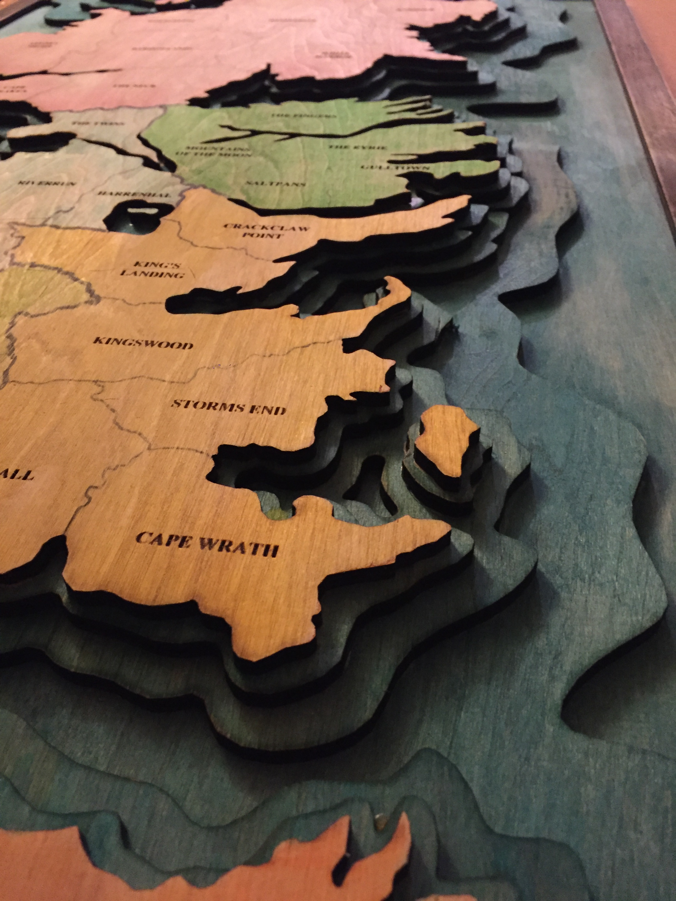
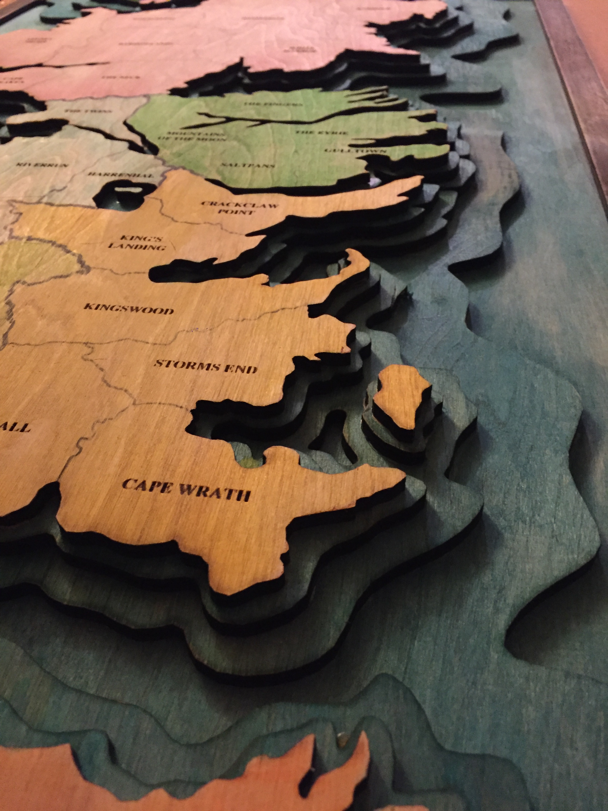

Topographic Map Of Westeros
Overview: I created a wooden topographic map of Westeros from the book series A Song of Ice and Fire and TV series Game of Thrones. It is meant to be an artistic and aesthetic piece while also doubling as a game board based on the popular game of Risk. The multiple 3D ocean layers are stained in a vibrant blue while each “continent”/region on the board is stained in various colors representing the most prominent House of power from the fantasy story line. My inspiration came from a love of the board game Risk while also being a big fan of the books and show from the mind of George R. R. Martin.